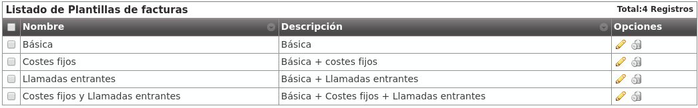
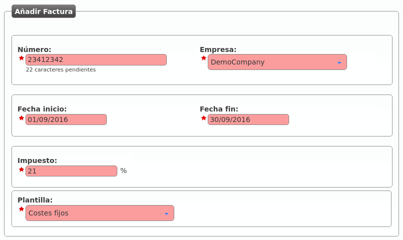
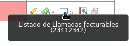

Generación de facturas¶
El objetivo final de todo el proceso de facturación es generar facturas que incluyan las llamadas con coste de una empresa concreta.
Plantillas de facturas¶
Antes de generar una factura de ejemplo, es importante entender que las facturas generadas utilizan unas plantillas que permiten su modificación.
Consejo
De este modo, cada operador de marca puede crear plantillas con los datos deseados, la estética deseada, añadir logos y hasta gráficas de consumo.
Las plantillas son interpretadas con handlebars y renderizadas con la librería wkhtmltopdf.
La ayuda contextual de la sección Configuración de Marca > Plantillas de facturas incluye una explicación resumida del proceso de creación de plantillas. En la página oficial de wkhtmltopdf puede encontrar más información. También puede profundicar en las expresiones disponibles en las plantillas aquí.
Por defecto, IvozProvider incluye las siguientes plantillas de ejemplo (en la ayuda contextual se pueden encontrar enlaces a las mismas):
Costes fijos¶
Los costes fijos son un concepto fijo que se pueden añadir a las facturas que utilicen plantillas que tengan en cuenta costes fijos.
Sirva la siguiente imagen de ejemplo (sección Costes Fijos):

A la hora de generar una factura, como se verá más adelante, se podrá indicar cuáles de estos conceptos se incluyen en la factura (y en qué cantidades).
Creacion de una factura¶
La sección Facturas es la que permite al operador de marca generar facturas para emitir a sus empresas.
Añadimos una factura nueva para explicar el proceso:
- Número
Será incluído en la factura y representa el número de factura
- Compañía
Empresa para la cual estamos generando la factura
- Fecha inicio/fin
Tramo temporal cuyas llamadas queremos tener en cuenta
- Impuesto
Impuesto a añadir al coste total calculado
- Plantilla
Plantilla que queremos utilizar para generar esta factura
Añadamos ahora unos costes fijos a esta factura concreta pulsando:

Y añadamos los costes fijos que queramos, así como sus cantidades:

En este punto, podemos generar la factura pulsando:

Pulsando el siguiente botón podemos ver las llamadas que han sido incluidas en la factura:
Y pulsando este botón podemos descargar la factura en formato PDF:

Advertencia
La fecha fin tiene que ser una fecha ya pasada. Es decir, no se puede sacar facturas de tramos futuros o del día actual.
Error
Todas las llamadas del tramo escogido tienen que estar facturadas para poder emitir la factura.